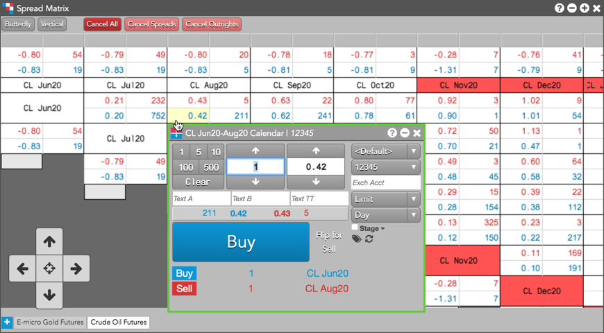

Using the Spread Matrix and a floating order entry screen, you can quickly enter orders for all outrights and inter-product spreads within a single window for active spread trading. Entering an order from a floating MD Trader or Order Ticket in an inter-product Spread Matrix also creates an inter-product spread in Autospreader®.
When you click a market data cell for an instrument that does not intersect with another instrument in the matrix, a floating order entry widget opens pre-populated with the market price for that instrument. When you click a market data cell where the products intersect in the matrix, a floating order entry widget opens pre-populated with the synthetic price for the inter-product spread.

Note: The cells containing spread contract names are highlighted to indicate which contracts you are spread trading.